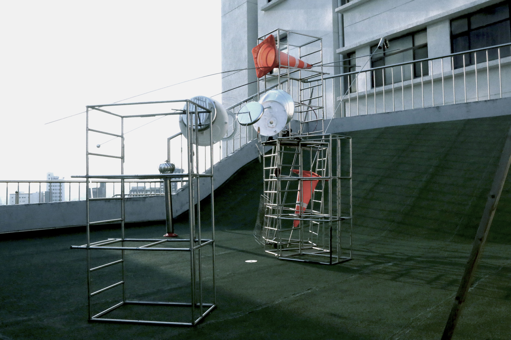
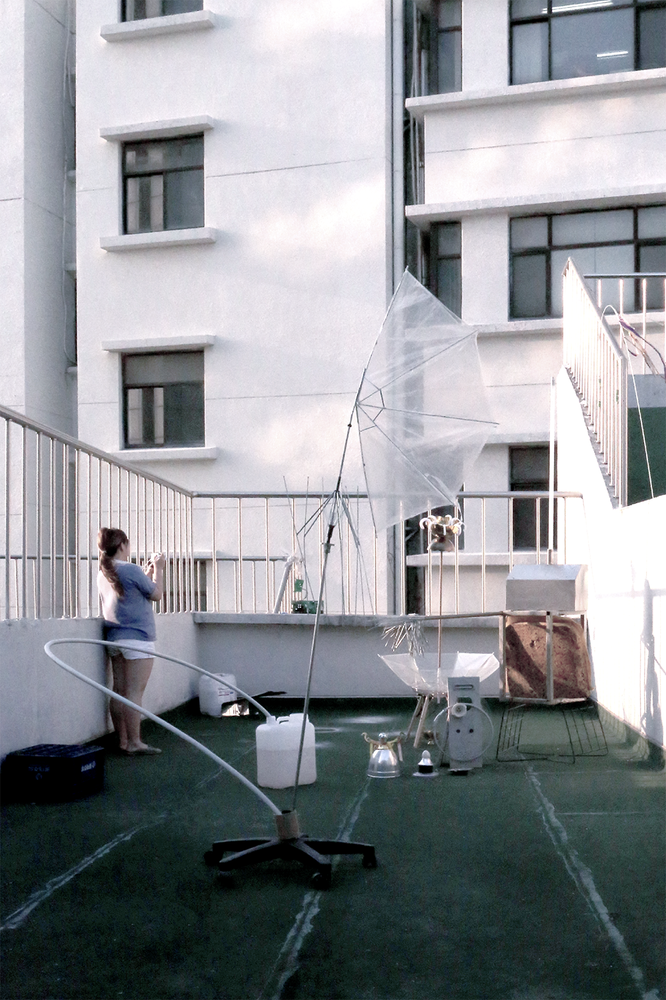

Dabin Kim 多彬 - Typography ↔ Print + Digital --- Dabin Kim 多彬 - Typography ↔ Print + Digital --- Dabin Kim 多彬 - Typography ↔ Print + Digital --- Dabin Kim 多彬 - Typography ↔ Print + Digital ---
Dabin Kim → is Typography Apprentice. I tries to expand the boundary of visual language, work in and out between digital surface and tangible surface. Currently majoring in Visual Communication Design at Hongik University, Korea.
Archive → Press the eye👠below to unfold the screen.
Contact → dabinkiim@gmail.com • Instagram • Tumblr / To actually visit the Web below → Github
I value small practices and run few groups with friends. To check more on instagram, Typography _ , Coding _
Squatting Practice, 2019, Installation.
At this project, Trash became an ingredient of mobile, to create aperture in reality. I as a team occupies part of the school grounds and tries squatting - walks around school like a stroller, collects trash, tries to find new methodologies and fun to use space and trash within the space of school.
Through the process of dismantling and recombining objects collected for consistently meaningless reasons, naturally living (without the intended external power) installations were created. Some makes a different sound when water falls and hits, and some turns and curves by the wind. The process of understanding objects and developing them into stories by adding new installations to the space was a process of continuing to try to create and take their own language.

 